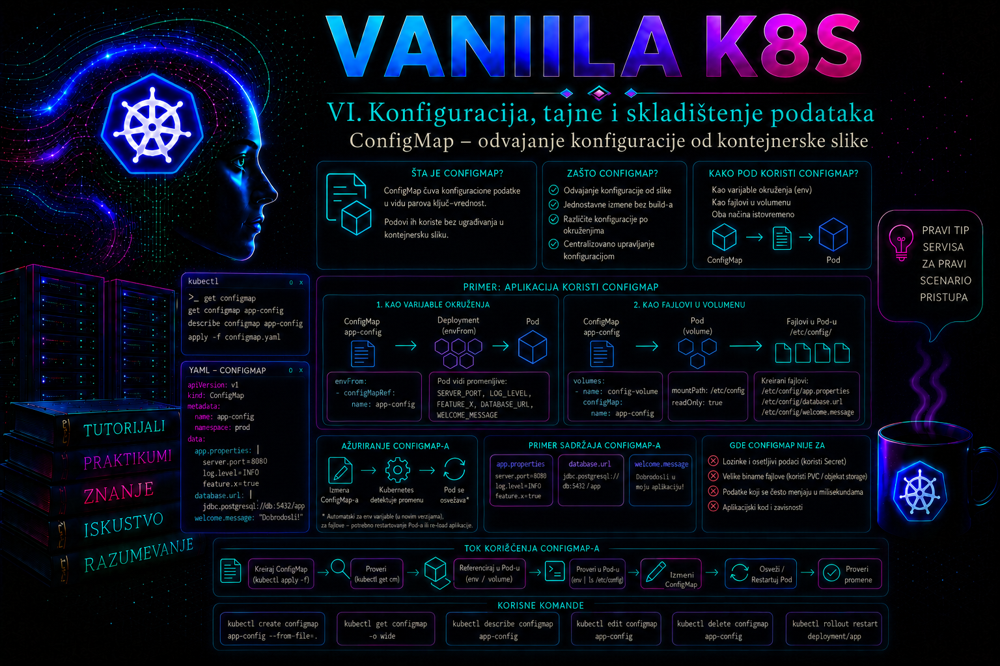

Vanilla Kubernetes

Kontejnerska slika treba da sadrži aplikaciju, njene izvršne biblioteke i stabilne podrazumevane vrednosti, ali ne i konfiguraciju koja se razlikuje između razvojnog, testnog i produkcionog okruženja. Kada se adresa zavisnog servisa, nivo logovanja, naziv okruženja ili sadržaj aplikacionog konfiguracionog fajla ugradi direktno u sliku, svaka promena zahteva novu izgradnju, testiranje i distribuciju slike. Takav postupak usporava isporuku, povećava broj gotovo identičnih slika i otežava dokazivanje koja je konfiguracija zaista korišćena u određenom trenutku.
Kubernetes objekat ConfigMap rešava ovaj problem tako što čuva nepoverljive konfiguracione podatke odvojeno od kontejnerske slike i omogućava Podovima da ih koriste kao promenljive okruženja, argumente komandne linije ili fajlove montirane kroz volumen. ConfigMap nije mehanizam za čuvanje lozinki, tokena, privatnih ključeva i sertifikata. Takvi podaci pripadaju objektima tipa Secret ili spoljašnjem sistemu za upravljanje tajnama, uz odgovarajuću enkripciju, kontrolu pristupa i audit.
Administratorski posao zato nije samo da napravi ConfigMap. Administrator mora da odredi šta zaista pripada konfiguraciji, kako će aplikacija učitati podatke, da li podržava ponovno učitavanje bez restarta, kako će se promena verzionisati, ko sme da je izvrši, kako će se validirati i kako će se sistem vratiti na prethodno stanje ako nova vrednost izazove incident.
Uloga ConfigMap objekta u Kubernetes arhitekturi
ConfigMap je namespaced Kubernetes API objekat iz osnovne grupe v1. Njegov sadržaj se čuva u stanju klastera i dostupan je komponentama koje imaju odgovarajuća prava pristupa. Pod ne „kontaktira” ConfigMap kao mrežni servis. Umesto toga, PodSpec sadrži referencu na ConfigMap, a Kubernetes tokom formiranja izvršnog okruženja prosleđuje izabrane vrednosti kontejneru.
ConfigMap najčešće sadrži jednostavne parove ključ–vrednost ili kompletne tekstualne konfiguracione fajlove. Polje data čuva UTF-8 tekstualne vrednosti, dok je binaryData namenjen binarnim podacima kodiranim u base64 obliku u YAML/JSON API reprezentaciji. Ključevi u data i binaryData ne smeju se preklapati; svaki ključ sme sadržati alfanumeričke znakove, crticu, donju crtu ili tačku. ConfigMap ne sme biti veći od 1 MiB. Veći sadržaj treba smestiti u kontejnersku sliku, trajni volumen, objektno skladište, repozitorijum artefakata ili specijalizovani konfiguracioni servis.
Pod i referencirani ConfigMap moraju biti u istom namespace-u. Static Pod manifest ne može da referencira ConfigMap niti druge Kubernetes API objekte, jer kubelet takav Pod pokreće neposredno iz lokalnog manifesta, bez uobičajenog razrešavanja namespaced zavisnosti kroz PodSpec. Četvrti, ređi obrazac jeste da aplikacija pomoću Kubernetes API-ja sama čita ili prati ConfigMap. Tada njen ServiceAccount zaista mora imati precizno ograničena RBAC prava get, a po potrebi list i watch; time aplikacija preuzima i odgovornost za keširanje, ponovne pokušaje i bezbedno ponovno učitavanje.
apiVersion: v1
kind: ConfigMap
metadata:
name: inventory-web-config
namespace: inventory-prod
data:
APP_ENV: production
LOG_LEVEL: info
application.properties: |
server.port=8080
inventory.api.base-url=http://inventory-api:8080
inventory.cache.ttl-seconds=300U ovom primeru ista ConfigMap sadrži pojedinačne vrednosti i jedan višelinijski fajl. To je tehnički dozvoljeno, ali administrator treba da grupiše samo podatke koji imaju isti životni ciklus, istog vlasnika i isti način odobravanja. Konfiguracija aplikacije i konfiguracija nezavisnog pomoćnog agenta često ne treba da budu u istom objektu, jer promena jedne komponente tada nepotrebno utiče na drugu.
Šta treba, a šta ne treba čuvati u ConfigMap objektu
U ConfigMap obično pripadaju nazivi okruženja, nivoi logovanja, adrese internih servisa, vremenski intervali, pragovi, feature flag vrednosti koje nisu bezbednosno osetljive, format izlaza, tekstualni šabloni i konfiguracioni fajlovi aplikacije. Vrednost treba da bude promenljiva između okruženja, ali ne sme biti tajna.
ConfigMap nije zamena za bazu podataka, distribuirani keš, skladište velikih artefakata niti sistem za upravljanje tajnama. U njemu ne treba držati korisničke podatke, poslovne transakcije, pristupne lozinke, API tokene, privatne ključeve, konfiguracije koje sadrže ugrađene kredencijale ili podatke koji se menjaju velikom učestalošću. Svaka izmena je operacija nad Kubernetes API objektom i deo je kontrolnog stanja klastera; ConfigMap zato nije projektovan kao visokofrekventno key-value skladište.
Poseban rizik predstavlja pogrešna pretpostavka da je podatak bezbedan samo zato što se nalazi unutar klastera. Korisnik ili ServiceAccount sa pravom get, list ili watch nad ConfigMap objektima može pročitati njihov sadržaj. Pored toga, vrednosti mogu postati vidljive u manifestima, Git repozitorijumima, CI/CD logovima, izlazu komande kubectl describe ili dijagnostičkim paketima. Klasifikacija podatka mora prethoditi izboru Kubernetes objekta.
Načini prosleđivanja konfiguracije aplikaciji
Kubernetes podržava nekoliko načina korišćenja ConfigMap podataka. Izbor mora pratiti ponašanje aplikacije, a ne administratorsku pogodnost. Aplikacija koja očekuje promenljivu okruženja ne treba bez opravdanja da se menja kako bi čitala fajl, ali administrator mora razumeti da se vrednost promenljive okruženja ne menja u već pokrenutom procesu.
| Način korišćenja | Ponašanje promene | Tipična primena | Važno ograničenje |
|---|---|---|---|
env |
Vrednost se učitava pri kreiranju kontejnera | Pojedinačna promenljiva | Potreban je novi Pod da bi proces dobio novu vrednost |
envFrom |
Svi odgovarajući ključevi postaju promenljive okruženja | Skup jednostavnih parametara | Nevažeći nazivi promenljivih mogu biti preskočeni i prijavljeni događajem |
| ConfigMap volumen | Kubelet periodično projektuje nov sadržaj | Konfiguracioni fajlovi | Aplikacija mora ponovo pročitati fajl; ažuriranje nije trenutno |
subPath montiranje |
Fajl se montira na određenu putanju | Jedan fajl u postojećem direktorijumu | Automatsko osvežavanje ConfigMap sadržaja ne funkcioniše |
| Argument komande | Vrednost se proširuje pri pokretanju kontejnera | Parametar aplikacionog procesa | Potreban je novi Pod za promenu |
Za pojedinačnu promenljivu koristi se configMapKeyRef. Prednost je eksplicitnost: iz manifesta se jasno vidi koji ključ aplikacija koristi. Kada se koristi envFrom, svi ključevi ConfigMap objekta pokušavaju da postanu promenljive okruženja. To je praktično za veći broj jednostavnih vrednosti, ali povećava vezu između sadržaja ConfigMap objekta i procesa u kontejneru.
env:
- name: APP_ENV
valueFrom:
configMapKeyRef:
name: inventory-web-config
key: APP_ENV
- name: LOG_LEVEL
valueFrom:
configMapKeyRef:
name: inventory-web-config
key: LOG_LEVEL
ConfigMap volumen prikazuje svaki izabrani ključ kao fajl. Naziv ključa postaje naziv fajla, osim ako je drugačije mapiran preko items. Aplikacija zatim čita sadržaj sa definisane putanje. Montirana putanja treba da bude samo za čitanje, osim ako aplikacija iz opravdanog razloga kopira konfiguraciju u drugi, upisivi volumen.
volumes:
- name: application-config
configMap:
name: inventory-web-config
items:
- key: application.properties
path: application.properties
containers:
- name: inventory-web
volumeMounts:
- name: application-config
mountPath: /etc/inventory
readOnly: true
Montiranje volumena preko celog postojećeg direktorijuma prikriva fajlove koji su se na toj putanji nalazili u kontejnerskoj slici. Ako slika već sadrži druge potrebne fajlove u /etc/inventory, oni neće biti vidljivi nakon montiranja. Administrator zato mora pregledati strukturu slike ili koristiti posebnu praznu putanju. subPath može montirati samo jedan fajl bez prikrivanja direktorijuma, ali tada se gubi automatsko osvežavanje sadržaja i promena zahteva ponovno kreiranje Poda.
Preko polja items mogu se izabrati samo potrebni ključevi, promeniti njihova relativna imena i odrediti režim dozvola preko defaultMode ili pojedinačnog mode. Vrednosti režima u YAML-u mogu se pisati oktalno, na primer 0440; u JSON-u se navode decimalno. Dozvole nisu zamena za pravilno podešen securityContext, vlasništvo i najmanji potreban pristup procesu. Ako u items nedostaje neopcioni ključ, volumen se ne kreira i Pod neće normalno startovati.
Referenca može biti označena sa optional: true. Tada odsutan ConfigMap ili ključ ne blokira Pod: promenljiva ili fajl neće biti prisutni, a mount putanja volumena ipak može postojati. Ova mogućnost je bezbedna samo ako aplikacija ima dokumentovanu i proverenu podrazumevanu konfiguraciju. Za obavezne produkcione parametre opcionalnost često prikriva grešku i odlaže incident do trenutka kada aplikacija počne pogrešno da se ponaša.
Ažuriranje ConfigMap sadržaja i životni ciklus Podova
Najvažnija operativna razlika postoji između konfiguracije prosleđene kao promenljiva okruženja i konfiguracije montirane kao volumen. Promenljive okruženja postaju deo okruženja procesa kada se kontejner pokrene. Izmena ConfigMap objekta ne menja okruženje već pokrenutog procesa. Deployment zato mora da kreira nove Podove, na primer komandom kubectl rollout restart ili promenom Pod template-a kroz deklarativni deployment proces.
Kod ConfigMap volumena kubelet eventualno osvežava projektovane fajlove. Promena nije sinhrona ni trenutna, jer zavisi od periodičnog kubelet sync ciklusa i podešene strategije detekcije promene (Watch, TTL keš ili direktno čitanje). Zvanični primer za TTL pristup navodi da kašnjenje može dostići zbir kubelet sync perioda i TTL-a keša; podrazumevane vrednosti u tom primeru su po jedan minut. Promena anotacije Poda može pokrenuti raniju proveru, ali to nije zamena za projektovan rollout proces. Čak i kada se fajl promeni, aplikacija mora da podržava ponovno čitanje konfiguracije, signal za reload ili sopstveni file watcher. Bez toga proces nastavlja da koristi vrednosti koje je učitao pri pokretanju.
Zbog ove razlike status „ConfigMap je ažuriran” ne dokazuje da aplikacija koristi novu vrednost. Potrebne su najmanje tri odvojene provere: sadržaj API objekta, sadržaj unutar Poda i efektivno ponašanje aplikacije. Ako se konfiguracija koristi kao promenljiva okruženja, provera u starom Podu će namerno pokazati staru vrednost sve dok Pod ne bude zamenjen.
U produkciji se često koristi verzionisani naziv, na primer inventory-web-config-v2026-07-01, ili generator koji u ime dodaje hash sadržaja. Promena reference u Pod template-u tada automatski pokreće Deployment rollout, a prethodna ConfigMap ostaje dostupna za rollback. Ovaj pristup daje bolju sledljivost od menjanja jednog objekta „u mestu”, ali zahteva kontrolisano uklanjanje starih verzija.
Immutable ConfigMap objekti
ConfigMap može imati polje immutable: true. Nakon toga nije moguće menjati sadržaj polja data i binaryData, niti vratiti objekat u promenljivo stanje. Za novu konfiguraciju mora se napraviti novi ConfigMap i ažurirati referenca u workload objektu. Brisanje immutable ConfigMap objekta je moguće, ali je rizično ako ga aktivni ili budući Podovi i dalje referenciraju.
apiVersion: v1
kind: ConfigMap
metadata:
name: inventory-web-config-v1
namespace: inventory-prod
immutable: true
data:
APP_ENV: production
LOG_LEVEL: infoImmutable objekti smanjuju rizik od nenamerne izmene aktivne konfiguracije i mogu smanjiti opterećenje API servera i kubelet komponenti u klasterima sa veoma velikim brojem montiranih ConfigMap objekata. Pogodni su za kontrolisane GitOps i CI/CD tokove u kojima svaka promena dobija novu verziju. Nisu pogodni kada je očekivano često ručno menjanje istog objekta ili kada aplikacija zavisi od dinamičkog osvežavanja montiranog fajla.
Deklarativno upravljanje, verzionisanje i kontrola promene
Ručno izvršavanje komande kubectl create configmap --from-literal korisno je za laboratoriju i brzu dijagnostiku, ali produkciona konfiguracija treba da ima kontrolisani izvor istine. Manifesti ili ulazni konfiguracioni fajlovi čuvaju se u odobrenom repozitorijumu, prolaze pregled promene i primenjuju se automatizovanim procesom. Pre primene administrator treba da koristi kubectl diff, validaciju šeme, aplikacione provere sintakse i, kada je dostupno, serverski dry-run.
kubectl diff -f inventory-web-config.yaml
kubectl apply --dry-run=server -f inventory-web-config.yaml
kubectl apply -f inventory-web-config.yaml
Kustomize configMapGenerator može generisati ConfigMap iz fajlova ili literal vrednosti i po podrazumevanom ponašanju dodati hash sadržaja u naziv. Kada Deployment referencira generisani objekat, promena sadržaja proizvodi novo ime i novu verziju Pod template-a. To je koristan obrazac za pouzdan rollout, ali tim mora razumeti kako alat menja reference i kako se uklanjaju zastareli objekti.
ConfigMap ne treba ručno menjati direktno u produkciji pomoću interaktivnog editora, osim u odobrenoj hitnoj proceduri. Takva izmena stvara odstupanje između klastera i repozitorijuma, može biti prepisana sledećom automatizacijom i otežava audit. Ako je hitna promena neophodna, treba je odmah zabeležiti, potvrditi efektivno stanje i preneti istu izmenu u izvor istine.
Prava pristupa i bezbednosna odgovornost
ConfigMap je namespaced resurs, pa RBAC prava treba ograničiti na konkretan namespace i potreban skup glagola. Aplikaciji koja samo dobija ConfigMap kroz PodSpec najčešće nije potrebno da njen ServiceAccount direktno čita ConfigMap preko Kubernetes API-ja. Kubelet i kontrolne komponente obavljaju projektovanje vrednosti. Dodeljivanje aplikaciji prava list ili watch nad svim ConfigMap objektima bez poslovnog razloga nepotrebno širi posledice kompromitovanja Poda.
Administrator koji priprema promenu obično zahteva get, create, patch i update nad ConfigMap objektima, kao i get nad Deployment i Pod objektima radi validacije. Pravo delete treba dodeliti samo kada je potrebno za upravljanje životnim ciklusom. Prava za restart ili izmenu Deployment objekta moraju biti posebno odobrena, jer promena ConfigMap objekta i pokretanje novog rollout-a predstavljaju dve različite operacije.
kubectl auth can-i get configmaps -n inventory-prod
kubectl auth can-i update configmaps -n inventory-prod
kubectl auth can-i patch deployments.apps -n inventory-prod
kubectl auth can-i delete configmaps -n inventory-prod
Rezultat yes potvrđuje autorizaciju trenutnog identiteta, ali ne potvrđuje da je promena poslovno odobrena. Tehnička mogućnost nije isto što i ovlašćenje prema proceduri promene. Administrator mora proveriti tiket, vlasnika aplikacije, period održavanja, plan rollback-a i očekivani uticaj pre izmene produkcionog sistema.
Najčešće greške i način dijagnostike
- Pogrešan namespace. Pod može da referencira samo ConfigMap iz istog namespace-a. Provera se radi komandama
kubectl get pod,configmap -n inventory-prodi pregledom Pod događaja. Poruke poputconfigmap not foundukazuju na pogrešno ime, namespace ili redosled primene. - Pogrešan ključ. ConfigMap postoji, ali traženi ključ ne postoji. Ako referenca nije označena kao opciona, kreiranje kontejnera može biti blokirano. Upoređuju se PodSpec i izlaz
kubectl get configmap ... -o yaml. - Očekivanje automatske promene promenljive okruženja. API objekat sadrži novu vrednost, ali stari Pod i dalje ima staru. To je normalno ponašanje, a ne kvar kubelet komponente. Rešenje je kontrolisani rollout.
- Upotreba
subPathuz očekivanje dinamičkog osvežavanja. Fajl se neće ažurirati u aktivnom Podu. Potreban je restart Poda ili drugačiji način montiranja. - Montiranje preko postojećeg direktorijuma. Aplikacioni fajlovi iz slike postaju prikriveni, pa aplikacija prijavljuje da nedostaju iako postoje u sloju slike.
- Neispravna sintaksa aplikacionog fajla. Kubernetes uspešno montira sadržaj, ali aplikacija odbija konfiguraciju. Dijagnostika se radi aplikacionim logovima i ugrađenim validatorom konfiguracije, a ne samo proverom statusa ConfigMap objekta.
- Skladištenje tajni u ConfigMap objektu. Problem se rešava uklanjanjem osetljive vrednosti, rotacijom kompromitovanog kredencijala, premeštanjem u odgovarajući sistem za tajne i pregledom audit tragova.
- Promena bez pokretanja rollout-a. Deployment ostaje stabilan, ali aplikacija koristi staru konfiguraciju. Upoređuju se vreme izmene ConfigMap objekta, starost Podova i efektivna vrednost unutar procesa.
Integrisani praktikum: kontrolisana promena konfiguracije produkcione web aplikacije
Poslovni i tehnički kontekst. Tim održava internu aplikaciju inventory-web u namespace-u inventory-prod. Aplikacija je raspoređena kao Deployment sa dve replike i dostupna je preko Service objekta inventory-web. Konfiguracioni fajl application.properties montira se iz ConfigMap objekta inventory-web-config-v1. Potrebno je promeniti nivo logovanja sa info na debug radi vremenski ograničene dijagnostike i smanjiti cache TTL sa 300 na 60 sekundi. Promena mora proizvesti kontrolisani rolling update, bez prekida dostupnosti, uz mogućnost brzog vraćanja na prethodnu verziju.
Cilj. Napraviti novu immutable ConfigMap verziju, validirati sadržaj, povezati je sa Deployment objektom, proveriti rollout i ponašanje aplikacije, izvršiti negativni test i pripremiti rollback. Stari ConfigMap se ne menja niti briše tokom praktične promene.
Referentno okruženje. Kubernetes klaster podržane verzije, radna stanica sa odgovarajućom verzijom alata kubectl, aktivan kubeconfig kontekst, namespace inventory-prod, postojeći Deployment i Service inventory-web. Kontejner sluša na portu 8080 i izlaže HTTP endpoint /healthz. Slika aplikacije čita fajl /etc/inventory/application.properties pri pokretanju.
Potrebna prava. Čitanje ConfigMap, Deployment, ReplicaSet, Pod, Service i Event objekata; kreiranje ConfigMap objekta; izmena Deployment objekta; čitanje Pod logova; izvršavanje komande u Podu radi validacije. Brisanje ConfigMap objekata nije potrebno za implementaciju.
Preduslovi. Promena je odobrena, vlasnik aplikacije je potvrdio dozvoljene vrednosti, postoji period pojačanog nadzora, readiness proba je funkcionalna, a prethodni manifest Deployment objekta dostupan je u repozitorijumu. Direktorijum inventory-config-change biće napravljen na administratorskoj radnoj stanici.
-
Proveriti aktivni kontekst, identitet i autorizaciju.
Pogrešan kubeconfig kontekst može primeniti ispravnu konfiguraciju na pogrešan klaster. Prvo se prikazuje trenutni kontekst, zatim dostupnost namespace-a i potrebna prava.
Validacija: kontekst mora odgovarati planiranom produkcionom klasteru, namespace mora biti u stanjukubectl config current-context kubectl get namespace inventory-prod kubectl auth can-i get configmaps -n inventory-prod kubectl auth can-i create configmaps -n inventory-prod kubectl auth can-i patch deployments.apps -n inventory-prod kubectl auth can-i get pods/log -n inventory-prod kubectl auth can-i create pods/exec -n inventory-prodActive, a svaka neophodna autorizaciona provera mora vratitiyes. Rezultatnonije razlog za traženje širih administratorskih prava bez procedure, već za eskalaciju vlasniku RBAC politike. -
Snimiti početno stanje i proveriti zdravlje aplikacije.
Pre promene se dokumentuju Deployment, Podovi, postojeća ConfigMap referenca i događaji. Time se razlikuju prethodno postojeći problemi od posledica nove konfiguracije.
Validacija: Deployment treba da imamkdir -p inventory-config-change kubectl get deployment inventory-web -n inventory-prod -o yaml \ > inventory-config-change/deployment-before.yaml kubectl get configmap inventory-web-config-v1 -n inventory-prod -o yaml \ > inventory-config-change/configmap-v1-before.yaml kubectl get deployment inventory-web -n inventory-prod kubectl get pods -n inventory-prod \ -l app.kubernetes.io/name=inventory-web -o wide kubectl get events -n inventory-prod \ --sort-by=.metadata.creationTimestamp | tail -n 20 kubectl rollout status deployment/inventory-web -n inventory-prod \ --timeout=120s2/2dostupne replike, Podovi treba da buduRunningiReady, bez ponavljanih upozorenja kao što suFailedMount,BackOffiliUnhealthy. Ako početno stanje nije zdravo, promena se zaustavlja dok se ne proceni postojeći incident. -
Potvrditi način na koji Deployment koristi ConfigMap.
Ne treba pretpostaviti da je konfiguracija montirana kao volumen samo na osnovu naziva objekta. Pregleda se Pod template i tačna referenca.
Validacija: prvi izlaz mora sadržatikubectl get deployment inventory-web -n inventory-prod \ -o jsonpath='{.spec.template.spec.volumes[*].configMap.name}{"\n"}' kubectl get deployment inventory-web -n inventory-prod \ -o jsonpath='{range .spec.template.spec.containers[*].volumeMounts[*]}{.name}{" => "}{.mountPath}{" subPath="}{.subPath}{"\n"}{end}'inventory-web-config-v1, a volumen mora biti montiran na/etc/inventorybezsubPathvrednosti. Iako bi volumen mogao dinamički da se osvežava, u ovom scenariju koristi se verzionisani immutable objekat i kontrolisani rollout. -
Proveriti trenutno efektivnu konfiguraciju u oba Poda.
API objekat i PodSpec nisu dovoljan dokaz. Potrebno je pročitati montirani fajl unutar svakog aktivnog Poda.
Validacija: oba Poda treba da prikažufor pod in $(kubectl get pods -n inventory-prod \ -l app.kubernetes.io/name=inventory-web \ -o jsonpath='{.items[*].metadata.name}'); do echo "=== ${pod} ===" kubectl exec -n inventory-prod "${pod}" -- \ cat /etc/inventory/application.properties donelogging.level.root=infoiinventory.cache.ttl-seconds=300. Različit sadržaj između replika predstavlja konfiguraciono odstupanje koje mora biti istraženo pre nastavka. -
Napraviti deklarativni manifest nove ConfigMap verzije.
Nova verzija dobija naziv
inventory-web-config-v2, oznake za vlasništvo i anotaciju sa razlogom promene. Objekat je immutable kako bi odobreni sadržaj ostao nepromenljiv.
Validacija: lokalni fajl treba pregledati pre slanja API serveru. Posebno se proveravaju namespace, naziv, YAML uvlačenje, dozvoljene aplikacione vrednosti i odsustvo tajni.cat > inventory-config-change/inventory-web-config-v2.yaml <<'EOF' apiVersion: v1 kind: ConfigMap metadata: name: inventory-web-config-v2 namespace: inventory-prod labels: app.kubernetes.io/name: inventory-web app.kubernetes.io/component: configuration app.kubernetes.io/managed-by: kubectl annotations: change.tashizza.example/reference: "CHG-2026-0728" change.tashizza.example/purpose: "Temporary diagnostic logging and cache TTL reduction" immutable: true data: application.properties: | server.port=8080 inventory.api.base-url=http://inventory-api:8080 inventory.cache.ttl-seconds=60 logging.level.root=debug EOF
Odsustvo izlaza druge komande ne predstavlja potpunu bezbednosnu analizu, ali pomaže u otkrivanju očigledno pogrešno unetih osetljivih polja.cat inventory-config-change/inventory-web-config-v2.yaml grep -nE 'password|token|secret|private.key' \ inventory-config-change/inventory-web-config-v2.yaml || true -
Izvršiti serversku validaciju i pregled razlike.
Serverski dry-run koristi validaciju API servera bez trajnog kreiranja objekta. Pošto objekat još ne postoji,
kubectl difftreba da prikaže dodavanje nove ConfigMap.
Validacija: dry-run mora vratiti potvrdu bez greške, a diff sme da sadrži samo planiranu novu ConfigMap. Greške u YAML-u, nedozvoljena polja ili admission politici moraju se ispraviti u izvornom manifestu, ne zaobići opcijom koja isključuje validaciju.kubectl apply --dry-run=server \ -f inventory-config-change/inventory-web-config-v2.yaml kubectl diff \ -f inventory-config-change/inventory-web-config-v2.yaml -
Kreirati novu ConfigMap i proveriti sadržaj iz API-ja.
Primena nove verzije ne menja aktivne Podove jer Deployment još uvek referencira
v1.
Validacija: objekat mora postojati, polje immutable mora bitikubectl apply \ -f inventory-config-change/inventory-web-config-v2.yaml kubectl get configmap inventory-web-config-v2 -n inventory-prod kubectl get configmap inventory-web-config-v2 -n inventory-prod \ -o jsonpath='{.immutable}{"\n"}{.data.application\.properties}{"\n"}'true, a sadržaj mora imati TTL 60 i nivo logovanja debug. Deployment i postojeći Podovi u ovom trenutku treba i dalje da koriste verzijuv1. -
Izvršiti negativni test nepromenljivosti.
Test potvrđuje da API server odbija pokušaj izmene sadržaja immutable ConfigMap objekta. Koristi se serverski dry-run kako se ne bi izvršila stvarna promena.
Očekivani rezultat: API server treba da odbije zahtev zato što je polje sa podacima immutable. Ako komanda neočekivano uspe, treba proveriti da li je objekat zaista kreiran sakubectl patch configmap inventory-web-config-v2 \ -n inventory-prod \ --type=merge \ --patch '{"data":{"application.properties":"invalid=true"}}' \ --dry-run=serverimmutable: truei da li se koristi očekivani klaster. -
Pregledati planiranu izmenu Deployment objekta.
Referenca se prvo menja na lokalnoj kopiji manifesta kako bi diff prikazao tačan efekat. Ne treba menjati naziv ConfigMap objekta pomoću nekontrolisane tekstualne zamene ako se isti tekst pojavljuje na više mesta.
Validacija: diff treba da prikaže samo očekivanu promenu reference sacp inventory-config-change/deployment-before.yaml \ inventory-config-change/deployment-v2.yaml python3 - <<'PY' from pathlib import Path path = Path("inventory-config-change/deployment-v2.yaml") text = path.read_text() old = "name: inventory-web-config-v1" new = "name: inventory-web-config-v2" if text.count(old) != 1: raise SystemExit( f"Expected exactly one ConfigMap reference, found {text.count(old)}" ) path.write_text(text.replace(old, new)) PY kubectl diff -f inventory-config-change/deployment-v2.yamlinventory-web-config-v1nainventory-web-config-v2. Serverski generisana polja iz sačuvanog YAML-a mogu stvarati šum, pa je u produkcionom repozitorijumu bolji čist deklarativni manifest bez statusa i runtime metapodataka. -
Promeniti samo ConfigMap referencu u aktivnom Deployment objektu.
Za praktični scenario koristi se JSON patch sa preciznom putanjom. Pre izvršavanja mora biti potvrđeno da je ConfigMap volumen prvi element niza volumena. U standardizovanom produkcionom procesu prednost ima promena deklarativnog manifesta u repozitorijumu.
Validacija: operacijakubectl get deployment inventory-web -n inventory-prod \ -o jsonpath='{.spec.template.spec.volumes[0].name}{" => "}{.spec.template.spec.volumes[0].configMap.name}{"\n"}' kubectl patch deployment inventory-web -n inventory-prod \ --type=json \ -p='[ { "op": "test", "path": "/spec/template/spec/volumes/0/configMap/name", "value": "inventory-web-config-v1" }, { "op": "replace", "path": "/spec/template/spec/volumes/0/configMap/name", "value": "inventory-web-config-v2" } ]'testsprečava promenu ako aktivno stanje nije ono koje administrator očekuje. Uspešna promena menja Pod template i pokreće novi Deployment rollout. -
Pratiti rolling update i događaje.
Tokom rollout-a proveravaju se dostupnost, novi ReplicaSet, status novih Podova i događaji. Ne treba odmah brisati stari ReplicaSet niti ConfigMap v1.
Validacija: rollout mora biti uspešno završen, Deployment mora ponovo imatikubectl rollout status deployment/inventory-web \ -n inventory-prod --timeout=180s kubectl get deployment,replicaset,pods -n inventory-prod \ -l app.kubernetes.io/name=inventory-web -o wide kubectl get events -n inventory-prod \ --sort-by=.metadata.creationTimestamp | tail -n 302/2dostupne replike, a novi Podovi ne smeju imatiFailedMount,CrashLoopBackOffili neuspešne readiness probe događaje. Ako rollout ne napreduje, ne nastavlja se sa dodatnim izmenama dok se ne pregledaju opis i logovi problematičnog Poda. -
Potvrditi novu konfiguraciju u svakom novom Podu.
Provera se izvodi nad svim replikama, jer uspešan status Deployment objekta ne dokazuje da svaka instanca koristi očekivani fajl.
Validacija: svaki Pod mora prikazatifor pod in $(kubectl get pods -n inventory-prod \ -l app.kubernetes.io/name=inventory-web \ -o jsonpath='{.items[*].metadata.name}'); do echo "=== ${pod} ===" kubectl exec -n inventory-prod "${pod}" -- \ cat /etc/inventory/application.properties doneinventory.cache.ttl-seconds=60ilogging.level.root=debug. Ako jedan Pod prikazuje staru konfiguraciju, proveravaju se njegov owner ReplicaSet, starost i referenca volumena u efektivnom PodSpec-u. -
Izvršiti funkcionalnu proveru preko Service objekta.
Privremeni Pod koristi se kao interni klijent. Opcija
--rmuklanja ga po završetku, pa je pogodna za kontrolisanu proveru bez trajnog dijagnostičkog resursa.
Validacija: komanda mora završiti izlaznim kodom 0 i vratiti očekivani odgovor health endpoint-a. Ako DNS ime ne može da se razreši, problem nije nužno u ConfigMap objektu; proveravaju se Service, Endpoints odnosno EndpointSlice objekti i DNS. Ako veza postoji, ali je odgovor HTTP 5xx, pregledaju se aplikacioni logovi.kubectl run inventory-config-test \ -n inventory-prod \ --image=curlimages/curl:8.12.1 \ --restart=Never \ --rm -i \ --command -- \ curl --fail --silent --show-error \ http://inventory-web:8080/healthz -
Pregledati aplikacione logove i potvrditi očekivani efekat.
Logovi kontejnera dostupni su preko kubelet i container runtime infrastrukture, a administrator im pristupa komandom
kubectl logs. U centralizovanom sistemu logovanja treba koristiti isti vremenski opseg i identifikatore novih Podova.
Validacija: ne sme biti grešaka parsiranja konfiguracije, poruka o nedostupnomkubectl logs deployment/inventory-web -n inventory-prod \ --all-pods=true --since=10m --prefix=true | tail -n 200inventory-apiservisu niti kontinuiranog restartovanja. Treba potvrditi pojavu očekivanih debug poruka bez nekontrolisanog rasta volumena logova. Ako debug nivo izlaže osetljive poslovne podatke, promenu treba odmah vratiti i prijaviti bezbednosnom vlasniku. -
Pripremiti i po potrebi izvršiti rollback.
Najbezbedniji povratak u ovom scenariju jeste vraćanje reference na poznatu immutable verziju
v1. Deployment istorija takođe može vratiti prethodni Pod template, ali eksplicitna referenca olakšava razumevanje ciljnog stanja.Upozorenje: rollback ponovo menja Pod template i pokreće zamenu Podova. Ne izvršava se istovremeno sa drugim rollout-om niti bez procene dostupnosti.
Validacija: nakon rollback-a oba nova Poda moraju biti Ready, montirani fajl mora ponovo sadržati TTL 300 i nivo logovanja info, a health endpoint mora vratiti uspešan odgovor. Ako promena ostaje aktivna, rollback komande se čuvaju u zapisu promene, ali se ne izvršavaju.kubectl patch deployment inventory-web -n inventory-prod \ --type=json \ -p='[ { "op": "test", "path": "/spec/template/spec/volumes/0/configMap/name", "value": "inventory-web-config-v2" }, { "op": "replace", "path": "/spec/template/spec/volumes/0/configMap/name", "value": "inventory-web-config-v1" } ]' kubectl rollout status deployment/inventory-web \ -n inventory-prod --timeout=180s -
Završiti promenu i planirati cleanup.
ConfigMap v1 se ne briše odmah nakon uspešnog rollout-a. Zadržava se najmanje tokom definisanog perioda rollback-a i dok se ne potvrdi da ga nijedan aktivni workload ne referencira.
Validacija: aktivni Deployment i svi njegovi Podovi moraju referencirati istu odobrenu verziju. Stari objekat može se ukloniti tek kroz zasebnu odobrenu cleanup promenu, nakon isteka perioda povratka i provere svih referenci.kubectl get deployment inventory-web -n inventory-prod \ -o jsonpath='{.spec.template.spec.volumes[*].configMap.name}{"\n"}' kubectl get pods -n inventory-prod \ -l app.kubernetes.io/name=inventory-web \ -o jsonpath='{range .items[*]}{.metadata.name}{" => "}{.spec.volumes[*].configMap.name}{"\n"}{end}' kubectl get configmaps -n inventory-prod \ -l app.kubernetes.io/name=inventory-web
Merljivi kriterijumi prihvatanja. Nova ConfigMap postoji kao immutable objekat; Deployment referencira odobrenu verziju; rollout se završava u roku od 180 sekundi; dostupne su 2 od 2 replike; svi Podovi imaju isti sadržaj konfiguracionog fajla; health endpoint vraća uspešan HTTP odgovor; nema događaja FailedMount, BackOff ili Unhealthy; logovi ne sadrže greške parsiranja konfiguracije; rollback postupak je dokumentovan i proveren na nivou komande, reference i očekivanog rezultata.
Administratorske prakse
- Kontrola odstupanja od izvora istine. Nakon svake promene i najmanje jednom u definisanom ciklusu kontrole upoređuje se aktivni objekat sa deklarativnim manifestom pomoću GitOps alata ili komande
kubectl diff -f. Neočekivana razlika zahteva proveru audit događaja i obustavljanje automatizovanog prepisivanja dok se ne utvrdi vlasnik promene. Dokumentuju se uzrok, vreme, identitet i korektivna mera u sistemu za upravljanje promenama. Uspeh se meri odsustvom nedokumentovanog drift-a. - Praćenje neuspešnih montiranja. Posle svakog rollout-a i kroz centralni event monitoring prate se događaji
FailedMount,FailediBackOff. Prva reakcija je provera imena ConfigMap objekta, namespace-a, ključeva i PodSpec reference. Incident se dokumentuje uz ime Poda, node, ReplicaSet i tačnu poruku događaja. Uspešnost se meri vremenom od detekcije do identifikovanja pogrešne reference. - Validacija aplikacione sintakse pre rollout-a. Svaki konfiguracioni fajl treba proveriti parserom, linterom ili aplikacionom komandom za validaciju pre primene. Greška sintakse, nepoznato polje ili vrednost van dozvoljenog opsega blokira promenu. Rezultati validacije čuvaju se uz CI/CD izvršenje ili tiket. Uspeh se meri brojem konfiguracionih grešaka otkrivenih pre produkcije i odsustvom restart petlji izazvanih neispravnim fajlom.
- Kontrola veličine i sadržaja. Pre većih izmena proverava se serijalizovana veličina objekta i da li ConfigMap sadrži velike ili binarne artefakte koji pripadaju drugom skladištu. Približavanje ograničenju od 1 MiB zahteva redizajn, a ne deljenje sadržaja na proizvoljne ključeve bez analize. Odluka se dokumentuje u arhitektonskoj evidenciji.
- Pregled RBAC prava. Kvartalno i nakon promene odgovornosti proverava se ko može da čita, menja i briše ConfigMap objekte. Koriste se
kubectl auth can-i, pregled Role i RoleBinding objekata i, gde postoji, centralni IAM izveštaj. Neočekivano pravoupdate,patchilideletezahteva uklanjanje ili obrazloženo odobrenje. Uspeh se meri brojem uklonjenih suvišnih privilegija i potpunom vezom između prava i poslovne uloge. - Nadzor obima logova posle promene nivoa logovanja. Nakon prelaska na debug nivo prati se stopa logova, zauzeće lokalnog prostora i opterećenje centralnog sistema za prikupljanje. Prag reakcije određuje platforma, ali svako višestruko povećanje u odnosu na baznu vrednost zahteva procenu. Prva reakcija je vremensko ograničavanje debug režima ili rollback. Dokumentuju se period, razlog i rezultat dijagnostike.
- Oporavak konfiguracije. Izvorni manifesti i istorija promena čuvaju se u verzionisanom repozitorijumu, dok klasterski backup mora obuhvatiti Kubernetes API objekte prema politici platforme. Integritet se proverava commit potpisima, kontrolama repozitorijuma i rezultatima backup posla. Probni restore u izolovanom namespace-u treba periodično da potvrdi da se ConfigMap može vratiti i povezati sa testnim workload-om. Backup je upotrebljiv tek kada obnovljeni Pod uspešno pročita očekivani sadržaj i prođe funkcionalnu proveru.
- Upravljanje starim verzijama. Najmanje nakon svakog uspešnog izdanja pregledaju se ConfigMap objekti označeni za istu aplikaciju. Objekat se ne briše dok postoji aktivna Pod, Deployment, StatefulSet, Job ili CronJob referenca i dok nije istekao period rollback-a. Cleanup se dokumentuje kao zasebna promena. Uspeh se meri odsustvom zastarelih objekata bez narušavanja mogućnosti oporavka.
Kontrolna lista
- Aktivni kubeconfig kontekst i namespace potvrđeni su komandama
kubectl config current-contextikubectl get namespace. - Komande
kubectl auth can-ipotvrđuju samo prava potrebna za čitanje, kreiranje ConfigMap objekta, promenu Deployment-a i validaciju. - Početni Deployment ima očekivan broj dostupnih replika, a Pod događaji ne pokazuju postojeće greške.
- Sadržaj ConfigMap objekta ne sadrži lozinke, tokene, privatne ključeve ili druge tajne.
- Manifest prolazi serverski dry-run, a
kubectl diffprikazuje samo odobrene promene. - Način korišćenja ConfigMap objekta je potvrđen kao
env,envFrom, volumen ili argument komande. - Za promenljive okruženja planirano je kreiranje novih Podova; za volumen je potvrđeno da li aplikacija podržava reload.
- Ako se koristi
subPath, dokumentovano je da automatsko osvežavanje sadržaja nije dostupno. - Nova verzija ConfigMap objekta postoji, ima očekivane ključeve i, kada je planirano,
immutable: true. - Deployment rollout završen je bez
FailedMount,CrashLoopBackOffi neuspešnih readiness proba. - Sadržaj konfiguracije proverен je unutar svake aktivne replike, a ne samo u Kubernetes API objektu.
- Funkcionalni test preko Service objekta vraća očekivani uspešan odgovor.
- Aplikacioni logovi potvrđuju uspešno učitavanje konfiguracije bez izlaganja osetljivih podataka.
- Rollback vraća referencu na poznatu prethodnu ConfigMap verziju i uključuje ponovnu proveru rollout-a.
- Manifest, diff, rezultati validacije, vreme promene i identitet izvršioca evidentirani su u repozitorijumu i sistemu za upravljanje promenama.
Zaključak
ConfigMap omogućava da jedna proverena kontejnerska slika radi u različitim okruženjima bez ugrađivanja promenljivih operativnih vrednosti u samu sliku. Njegova vrednost nije samo u čuvanju parova ključ–vrednost, već u jasnom razdvajanju odgovornosti: razvojni tim definiše kako aplikacija prima i validira konfiguraciju, platforma obezbeđuje pouzdano projektovanje podataka, a administrator kontroliše verziju, prava pristupa, rollout, validaciju i povratak na prethodno stanje.
Nakon ove lekcije administrator treba da razume razliku između konfiguracije učitane kao promenljiva okruženja i konfiguracije montirane kao fajl, uključujući posledice za ponovno učitavanje i restart Podova. Treba da ume da napravi deklarativan i po potrebi immutable ConfigMap, poveže ga sa workload objektom, proveri sadržaj u API-ju i unutar kontejnera, prati rolling update, tumači događaje i logove i potvrdi funkcionalni rezultat kroz aplikacioni endpoint.
Posebna odgovornost odnosi se na produkcione rizike. Pogrešan ključ može sprečiti pokretanje kontejnera, neispravan konfiguracioni fajl može izazvati restart petlju, promena nivoa logovanja može preopteretiti sistem za logove, a tajna greškom sačuvana u ConfigMap objektu može postati dostupna širokom krugu identiteta i alata. Uspešan API zahtev zato nije dovoljan kriterijum uspeha. Promena je završena tek kada su nove replike dostupne, efektivna konfiguracija potvrđena, aplikaciono ponašanje provereno i rollback ostao izvodljiv.
Granice tehnologije moraju ostati jasne. ConfigMap nije skladište tajni, baza podataka, repozitorijum velikih fajlova niti sistem za visokofrekventnu dinamičku konfiguraciju. Zahtevi za enkripcijom i rotacijom tajni, složenim validacionim šemama, distribucijom velikih artefakata ili trenutnim globalnim osvežavanjem mogu zahtevati Secret objekte, spoljašnji secrets manager, operator, CustomResourceDefinition ili namenski konfiguracioni servis.
Administrator sme da izvrši samo promene za koje ima i tehničko pravo i proceduralno odobrenje. Nejasno vlasništvo konfiguracije, sumnja da sadržaj uključuje tajne, neusaglašena očekivanja o reload ponašanju, neuspešna readiness proba, nedostupan rollback ili neočekivan uticaj na više aplikacija predstavljaju razlog za zaustavljanje promene i eskalaciju vlasniku aplikacije, platformskom arhitekti ili bezbednosnom timu. Profesionalno upravljanje ConfigMap objektima podrazumeva da svaka vrednost ima vlasnika, razlog, istoriju, validaciju i bezbedan put povratka.